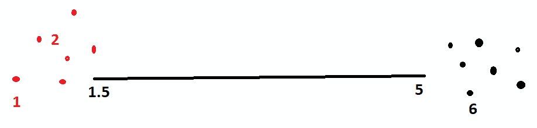

在前一章中，我们了解了金融和资本市场的基本概念。我们研究了人工智能如何通过运行风险模型和使用宏观经济数据生成销售预测来帮助我们优化最佳资本结构。我们还研究了人工智能在规划一个组织的财务内部和外部投资者沟通时有多有用。然后我们看了两个例子——第一个是关于如何优化债务和股权的融资组合，第二个是关于进行财务预测，帮助我们进行财务规划资本需求。
本章的目的是介绍可以用于财务规划的其他技巧。您将学习如何为新发行的股票进行自动联合融资，以便从感兴趣的投资者那里获得资金。然后，你将学习如何识别收购者和目标，这个过程需要科学背景，这样你才能挑选出最需要银行服务的。
在本章中，我们将讨论以下主题:
我们开始吧！
投资银行将是本章的重点。因此，你需要了解一些投资银行的基本概念。我们将从了解首次公开募股(T1)的挑战开始，通常被称为 T2 IPO(T3)。当一家公司为了从公众那里获得资金而决定上市时，他们会发布首次公开募股，供公众和机构认购。我们还将了解 M & A 的概念，以及如何对投资者进行分类，并将 AI 应用于并购。
以下是投资银行家要处理的一些核心问题:
让我们逐一回答这些问题。
为了回答第一个问题，在上一章中，我们简要说明了如何正确地对公司的资本结构建模，包括其财务状况。这个问题的核心仍然是，在给定一些对相关公司至关重要的宏观指标的情况下，如何估计驱动因素。
要回答第二个问题，如果我们能看到市场的投资偏好，那就很重要了。当投资者的投资决策由机器人顾问自动化时，我们应该很容易测试机器人所代表的投资者的需求。机器人需要关于投资的参数，而许多这些预测是由投资银行的引擎做出的；也就是说，在获取有关潜在发行的信息(也称为招股说明书)时，还应考虑其过去的准确性。我们将在本章完成的第一个例子中解决这个问题。
第三个问题主要是关于公司所有权和法律地位的合法性及其风险因素的报告和备案信息。当这一发行由机器人执行时，监管机构/证券交易所将有不同的要求:
在对股票进行分类时，有两种思想流派:一种基于定性特征，另一种基于定量特征。我们将关注定性方法，这种方法被称为风格。这种方案的一个例子就是晨星风格盒子(http://news . morning star . com/pdf/FactSheet _ Style Box _ final . pdf)。
在这里，我们可以查看部门/行业、股票规模、股票风险、股票潜力等等。创建特征和股票分类的方法有很多。在本章中，我们将使用扇区和大小作为定性分类的特征。
定量方法(例如，套利定价理论 ( APT ))通过分析将包含相似因素的股票组合在一起。
像股票分类一样，也有定量和定性的方法。定性可以基于资金类型(养老金、主权财富、保险等等)、策略(多空、全球宏观等等)、基础持有(期货、商品、股票、债券和私募股权)、风险等等。量化可以基于这些投资者所基于的近似因素。在本章的第一个例子中，我们将使用投资风险和回报作为定性分类的特征。
投资银行业务不仅包括证券上市，还包括咨询服务，如并购、T2 并购、公司估值等财务意见，以及其他事件驱动的融资业务，如管理层收购。简而言之，所有这些活动都与买卖公司和/或公司资产并对其进行正确定价有关。理解这一点最简单的方法是从买房的角度来思考房地产经纪人、评估师和抵押贷款银行家。并购就像两个人结婚——有时，一个人会更占优势，而其他时候，这是两个平等实体的婚姻。这背后的基本原理是，正如罗纳德·科斯(Ronald Coase)在 1937 年提出的理论，企业之所以存在，是因为它的运营效率更高。随着技术、法规和消费者偏好的变化，企业的经济边界也在变化，这为并购创造了条件。
我们主要讨论以下类型的交易:
对 M&A 进行分类的另一个维度是通过收购者和目标之间的交易前关系来完成的:如果他们都在同一行业，这被称为横向整合；如果他们是供应商-客户关系，这被称为垂直整合；当两者都不挂钩时，这被称为多元化。
作为一名投资银行家，以下是你需要关注的关键领域:
根据傻瓜指南(https://www . dummies . com/business/corporate-finance/mergers-and-acquisitions/steps-of-the-ma-process/)，一项并购交易可以用以下步骤来概括:
接下来我们来看 AI 在并购中的应用。
关于人工智能在银行家中的应用，人工智能用于确定正确的目标，并帮助量化交易后协同效应的定价。在现有的环境下，这两个步骤(第一步和最后一步)都是非常不可靠的，因为在现有的环境中没有太多的科学知识。首先，银行家的时间非常昂贵，而任何潜在交易的死亡率都非常高(例如，90%)。客户(买方/卖方)将有动机最大化银行的服务时间，即使没有交易可能完成。鉴于银行家的时间有限，而客户的目标是最大化银行家的时间，不管他们达成任何交易的实际意图是什么，最好的方法是从 M&A 交易中找到实际的经济效益。如果它从根本上起作用，就应该更迫切地宣布并让投资银行家参与交易执行/宣布。
建模方法实际上存在于今天的信用风险建模中，我们在前面的章节中提到过。鉴于财务状况，我们预测一个事件是否发生的二元结果。在信用风险模型的情况下，在 X 年内发生破产；然而，对于合并，考虑到财务状况，可能会在 X 年内宣布收购或撤资。如果破产的概率可以这样估计，我个人看不出这些建模方法之间有什么不同。
其次，当涉及到量化交易后的协同效应时，要么是成本效率、收入增长，要么是更高的生产率和员工知识转移的更好组合:
要做到这一点，我不认为任何现有的 M&A 银行家会愿意做出太多改变，因为考虑到目前客户和员工的数字化程度尚未成为主流，花在这上面的时间将会相当长。这意味着特征和模型不能做到这一点。但是我相信我们应该为 M&A 的未来模式而努力，特别是现在我们正在建设 M&A 的未来，培养下一代。
与金融投资相比，M&A 在 it 运营整合方面存在巨大的不确定性，而这正是人工智能应该提供价值的地方。人们对 M&A 交易成功的决定性因素进行了大量研究，这些因素带来了预期的协同效应；这些来自学术研究的发现或特征需要被收集和运行，以便产生可量化的成功可能性，并且将在计算发行价格时被定价。
为了确保公开上市证券的投资者有一个公平的市场，交易所要求我们公布财务结果发布、影响证券估值的重大公司活动等事件的发生。比如可以参考纽交所的 IPO 指南(https://www . NYSE . com/public docs/NYSE/listing/NYSE _ IPO _ guide . pdf)。
我们将通过本章中的例子来管理大量的数据。因此，理解我们将使用的底层数据技术至关重要。这些数据技术与存储不同类型的数据和信息有关。与信息存储相关的挑战有两个，首先是我们用来存储信息的物理介质，其次是存储信息的格式。
Hadoop 就是这样一种解决方案，它允许物理分布存储的文件。这有助于我们处理各种问题，例如在一个地方存储大量数据、备份、恢复等等。在我们的例子中，我们将数据存储在一台计算机上，因为计算机的大小不适合使用这种技术，但是下面的 NoSQL 数据库可以支持这种存储方式。在 Python 中，还有一种文件格式叫做 HDF5 ，它也支持分布式文件系统。
虽然可以使用 NoSQL 数据库，但我在本章中不使用它们的原因可以借助下表来解释，该表并排比较了 SQLite、Cassandra 和 MongoDB:
|
优点 |
缺点 |
结论 |
|
|
SQLite |
结构化数据格式，与数据帧兼容 |
无法保存非结构化数据。 |
为了简单起见，我们需要这个。 |
|
卡桑德拉 |
可以在分布式计算中运行，可以放入结构化数据(以字段作为项目) |
当处理结构化数据时，插入语法并不简单。 |
我们不能将这些用于我们的案例，因为我们的目标是聚集相似的投资者，并预测谁将在 IPO 中购买我们的新股。 |
|
MongoDB |
可以大规模处理大量数据和不同记录的并行处理 |
不适合交易记录等完全结构化的数据；仍然需要在运行任何机器学习算法之前将其转换为数据帧。 |
通过这一分析，我们看到，可能没有必要为了成为尖端技术而建立一个 NoSQL 数据库。在资本市场中，数据是非常结构化的，使用适合这一目的的 SQL 数据库可能更有效。
在我们开始研究编程内容之前，让我们先来看看集群模型，因为我们将在第一个示例中使用一个集群模型。
聚类寻求将相似的数据点组合在一起。举个简单的例子，当有三个数据点，每个数据点有一列，分别是[1]、[2]、[6]，我们选取一个点作为质心，代表附近的点；例如，有两个质心，[1.5]和[5]，每个质心代表一个簇:一个质心分别为[1]、[2]，另一个质心为[6]。这些样本集群可以在下图中看到:

当每个数据点有两列时，实际数据点和质心之间的距离需要将这两列视为一个数据点。为此，我们采用了一种叫做欧几里德距离的度量。
在银行业中采用聚类的一个关键挑战是，它会导致聚类过大，如果所有的聚类都是有目标的，则会降低真实的阳性率。根据我的经验，我会使用它进行初步的数据分析，以了解目标人群的主要动态，而不一定要得出在批发银行环境中具有经济意义的可操作的见解。在我们的例子中，我们将创建许多具有非常严格要求的聚类，即每个数据点到质心的距离平均有 5%的偏差。
关于聚类算法的另一个关键问题是确定我们提供给它多少特征。我们可以通过对某些类型的财务比率(例如，使用两种不同的盈利能力比率，如股本回报率和资产回报率)进行加权来提交偏差聚类。对此的解决方案是运行主成分分析，通过将相似的特征合并到同一个特征中来移除它们。
非金融/银行业的例子，可以参考 Suresh Kumar Gorakala 的构建推荐引擎(https://www . packtpub . com/big-data-and-business-intelligence/Building-practical-Recommendation-Engines-part-1-video)。
如果有问题，背后就有投资者。传统的投资银行会雇佣一群叫做辛迪加服务台的专业人士来处理证券发行分配给那些可以购买这些股票和债券的投资者。
如果我们考虑投资银行银团部门的角色，我们的工作将是确定杜克能源即将发行的新股的基础投资者，因为首席财务官需要股票融资。为此，我们将通过 Quandl/Sharadar 使用美国证券交易委员会备案文件中的机构持股数据，这将有助于我们找出兴趣相似的投资者的投资偏好，并将这些投资者与持有类似股票的投资者进行匹配，如杜克能源。
关于卖给谁，我们将把美股的最大投资者作为我们的投资者群体。银团贷款台的工作是向这些投资者出售任何股票发行的主要头寸。使用无监督学习方法，我们将相关股票推荐给合适的投资者作为首次公开发行。这可以通过使用证券相似性(称为持有相似性)和投资风格(称为投资者相似性)来实现。
下图显示了解决当前问题所涉及的步骤:
我们将在下面的小节中详细介绍每个步骤。
这里，我们将建立两个相似性模型——一个是股票相似性模型，另一个是寻找相似投资者模型。这两个模型都是聚类模型，它们属于机器学习方法的最后一种类型——无监督学习。我们挑选了 21 个财务比率来构建股票级别的聚类模型，而对于投资者模型，我们最多有 60 个特征(六个资本规模*五个投资决策*两种指标):
导入所有相关的库，然后通过读取 CSV 文件和描述股票的 scale 字段来加载股票行情系统。为了减少处理时间，加载投资者列表而不是所有投资者。对于每一个投资者，计算每一个细分市场股票的方向(即我们以规模作为唯一的细分市场，但实际上要用国家×行业×规模)。
若要建立投资者分类模型，请遍历投资者并计算变动和利润(已实现和未实现的利润)，如下所示:
'''************************
Load Data
'''
#import relevant libraries
import quandl
from datetime import date,timedelta
import pandas as pd
import os
#load tickers universe and description field (scale)
...
#loop through investors
...
for investor in investorNameList:
...
#calculate the change in position by ticker on
Quarter-to-quarter basis
...
#qualify investor's activities
print('classify investor decision')
...
#output the ticker’s activities of the investor
## Prepare investor Profile'''
#load relevant libraries
import os
import pandas as pd
import numpy as np
from time import time
from sklearn import metrics
from sklearn.cluster import KMeans
from sklearn.preprocessing import StandardScaler
import pickle
...
#Summarize quarterly performance of investors per quarter
...
for file in file_list:
...
for index, row in tmp_pd.iterrows():
...
#calculate return (realized, unrealized and new money)
...
## Cluster investors
#cleansed and transform data for clustering
...
sc_X = StandardScaler()
X = sc_X.fit_transform(investor_pd)
#define the k means function
def bench_k_means(estimator, name, data):
...
#try out different K means parameters and find out the best parameters
...
for num_cluster in range(5, 500):
KMeans_model = KMeans(init='k-means++', \
n_clusters=num_cluster, n_init=10)
...
## Output the results
#Output clusters
这里，我们对按市场列出已实现和未实现回报的特性进行聚类分析。然后，我们将阈值设置为 0.05，这意味着我们构建的聚类在特征变量之间必须有 5%的变化。最后，我们输出聚类结果；即聚类结果、聚类模型和缩放器。
为了构建股票聚类模型，我们将加载数据，准备股票的配置文件，对股票进行聚类，并输出聚类和结果:
'''*************************************
i. load industry, tickers and functions
'''
#import libraries
import quandl
import pandas as pd
import numpy as np
import os
from time import time
from sklearn import metrics
from sklearn.cluster import KMeans
from sklearn.preprocessing import StandardScaler
import pickle
#KPI keys
...
...
#define important functions
#download fundamental data of the ticker
def download_tkr(tkr):
...
#kmean clustering function
def bench_k_means(estimator, name, data):
...
'''*************************************
#2a. load data
'''
#parameters
...
'''*************************************
#i. filter the industry in scope
'''
...
#collect tkr in each industry
for index, row in df_tkr.iterrows():
...
'''*************************************
#ii. create a dataframe for each industry to do clustering
'''
...
#loop through the industry
for ind, list_tkr in dict_ind_tkr.items():
...
#Go through the ticker list to Download data from source
#loop through tickers from that industry
for tkr in list_tkr:
...
'''*************************************
2b. prepare features for clustering for the industry
'''
#convert to float and calc the difference across rows
...
'''*************************************
2C. Perform K means clustering for the industry
'''
#clustering
sc_X = StandardScaler()
X = sc_X.fit_transform(df_fs_filter)
...
for num_cluster in range(5, max_clsuter):
KMeans_model = KMeans(init='k-means++', \
n_clusters=num_cluster, n_init=10)
...
'''*************************************
2D. Output the clustering model and scaler for the industry
'''
#Output clusters
...
通过采用我们在前一章财务预测中开发的方法，我们可以得出财务报表，从而得出以后用于股票分类的财务比率。
在上一章的例子中，我们预测了发行债券和股票后的资本结构。但首先，除了盈利能力、规模等方面的变动，我们没有假设股票价格的任何变动，例如市盈率。
要预测新股票的财务状况，请执行以下步骤:
#import relevant libraries
import os
import pickle
import math
import numpy as np
import pandas as pd
import quandl
...
#perform financial projection
#reuse the function developed for WACC optimization
def cal_F_financials(record_db_f, logreg, logreg_sc, new_debt_pct, price_offering, levered_beta, sales_growth, coefs, r_free):
...
'''*****************************
Step 2: Simulate financial of the new stock
'''
...
#load credit model built previously
...
#reuse the parameters developed from WACC example
...
#assume that we are raising equity for the same client
...
#run simulation / projection of financial data
...
正如我们所看到的，股票集群看起来像我们正在研究的新股票。聚类模型将告诉我们这个新股票与同一聚类中的哪些其他股票相关联。
在股票上建立模型时，我们可以使用一个捷径，这也是一个实际的考虑。对于股票太少(例如，少于 100 只)的行业中的股票，没有必要建立聚类模型来帮助我们找到行业内的子组。相反，如果数量不多，我们应该去检查每一只股票。
给定股票集群的完整成员列表，我们可以到这些股票的现有股东那里找出当前的所有者(投资者列表 A)。如果我们还需要更多的名字，那么我们可以运行另一个投资者级别的聚类模型，找出还有谁(投资者名单 B)可能对这只股票感兴趣，它与投资者名单 a 具有相似的特征。
按照以下步骤执行聚类:
下面是我们可以用来执行聚类的伪代码:
#Step 2 and 3. Perform clustering to find out the similar investors whose sharing the similar stocks
'''*****************************
Step 3: Run the similarity models to find out holders of the similar stocks
'''
#check if we need any model - if industry has too few stocks, no model needed to find out the similar stocks
...
#retrieve the list of tickers that are similar
...
#find list of investors looking at the similar size and more
#check which investors have it...
...
#loop through investors holding name by name to find out investor that is holding the similar stocks
for filename in investorNameList:
...
#Load the investor clustering model
...
#extract the investors' cluster id
...
#find out who else share the same cluster id
...
#print out the investor list
...
前面的代码显示了如何列出具有相似投资组合股票的聚类投资者。在这里，我们为投资者建立了一个聚类模型，并使用它。在下一节中，我们将了解收购方和目标方。
收购者和目标领域的公司财务研究已经有很长的历史，我们的挑战是将这些丰富的研究应用到现实世界中。对冲基金一直在将这些研究成果应用于并购套利，M&A 的银行家们也一直在关注定期对市场进行评分和评估(例如，阅读晨报)。
在这一章中，我们将假设你是一个正在寻找组织机会的 M&A 银行家。为了优化我们的时间分配，我们可以通过关注能够达成交易的客户来更好地分配我们的时间。所以我们会用一个模型来预测我们在并购中成为收购方或者目标的概率。
当前的新一代投资银行家应该使用自动化金融建模工具。随着时间的推移，可以捕获数据，然后添加预测功能来帮助银行家进行金融建模。使用 Excel 的当前世界肯定需要进行更多的 NLP 研究，以研究如何训练机器解析/理解基于 Excel 的财务模型，该模型被人类理解，但几乎完全不被机器理解！
其次，M&A 预测模型应该是投资委员会/委托受理委员会的一部分，在那里应该介绍宣布交易的可能性——就像今天在信贷委员会中介绍信用评级一样。
因此，让我们看看如何在 M&A 预测中应用类似的信用评级方法来发现交易。
按照这些步骤来解决这个问题。我们将从加载必要的 Python 库开始:
'''*************************************
#1. Import libraries and define key variables
'''
import pandas as pd
import numpy as np
import quandl
import matplotlib.pyplot as plt
from sklearn.metrics import classification_report,roc_curve, auc,confusion_matrix,f1_score
from sklearn.model_selection import train_test_split
from sklearn import tree
from sklearn.neural_network import MLPClassifier
from sklearn.preprocessing import StandardScaler
import pickle
import graphviz
#KPI keys
quandl.ApiConfig.api_key = '[API Key for Quandl]'
'''*************************************
#2. Definition of functions
'''
#2a.Download tickers
def download_tkr(tkr):
...
#2b.Train tree
def train_tree(X,Y,ind):
...
##2C Neural Network
#2Ci. Grid search that simulate the performance of different neural network design
def grid_search(X_train,X_test, Y_train,Y_test,num_training_sample):
...
#2Cii. Train Neural Network
def train_NN(X,Y,ind):
...
def filterIndustriesByTickets(ind):
def displayCurveChart(type, ind):
'''*************************************
3. Execute the program
#3a. filter the industry in scope
'''
groupby_fld = 'sicsector'
min_size = 30
df_tkr = pd.read_csv('industry_tickers_list.csv')
...
#collect ticker in each industry
for index, row in df_tkr.iterrows():
ind = row[groupby_fld]
tkr = row['ticker']
if ind in list_scope:
if ind in dict_ind_tkr:
dict_ind_tkr[ind].append(tkr)
else:
dict_ind_tkr[ind] = [tkr
#loop through the dictionary - one industry at a time
for ind, list_tkr in dict_ind_tkr.items():
df_X = pd.DataFrame({})
df_Y = pd.DataFrame({})
print(ind)
#Go through the ticker list to Download data from source
#loop through tickers from that industry
for tkr in list_tkr:
print(tkr)
try:
df_tmp,X_tmp,Y_tmp = download_tkr(tkr)
...
在这里，我们加载了公司的事件。加载事件后，我们只过滤那些与 M&A 相关的事件，并使它们成为二进制列，以表示该公司是否在 1 个日历年内完成了任何 M&A，其中1等于yes。然后，我们将公司的财务和事件结合在一起——我们在第 t 年用二元事件指示器结合了第 t-1 年的财务。我们将空事件转换为 0 。这种逻辑的大部分实现是为了准备财务和事件，通过download_tkr(tkr)完成。
#neural network
nn_clf,f1_score_temp = train_NN(df_X,df_Y,ind)
f1_list.append(f1_score_temp)
nn_clf.get_params()
#decision tree
try:
tree_clf,f1_score_temp = train_tree(df_X,df_Y,ind)
except Exception:
continue
f1_list.append(f1_score_temp)
tree_clf.get_params()
这里，我们利用了我们在第 2 章、时间序列分析中构建的内容。然而，为了便于说明，我们只使用了决策树和神经网络代码。
这就把我们带到了本章的结尾。
在这一章中，你了解了投资银行的基础知识。现在，您应该能够理解 IPO 和 M&A 的概念。根据您在本章中学习的数据技术，您应该能够对领域需求进行建模。通过使用聚类模型技术，您现在可以创建高性能的人工智能系统。
之后，我们完成了一个练习，解决了新发行的自动联合问题。我们还看了一个关于如何识别收购者和目标的例子。
在下一章中，我们将关注投资组合管理、资产管理和一些适用于投资组合管理领域的人工技术。